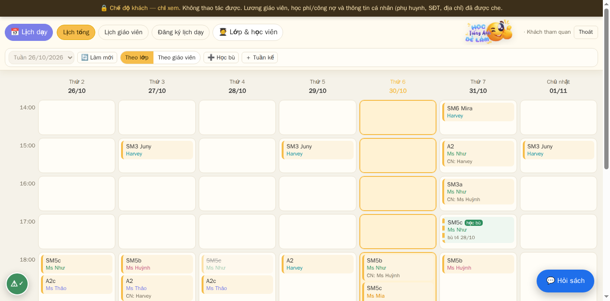
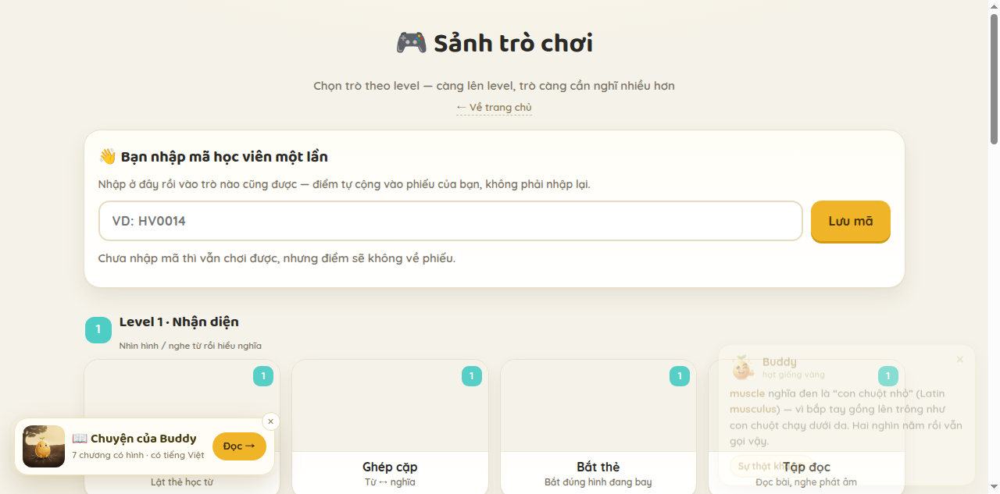
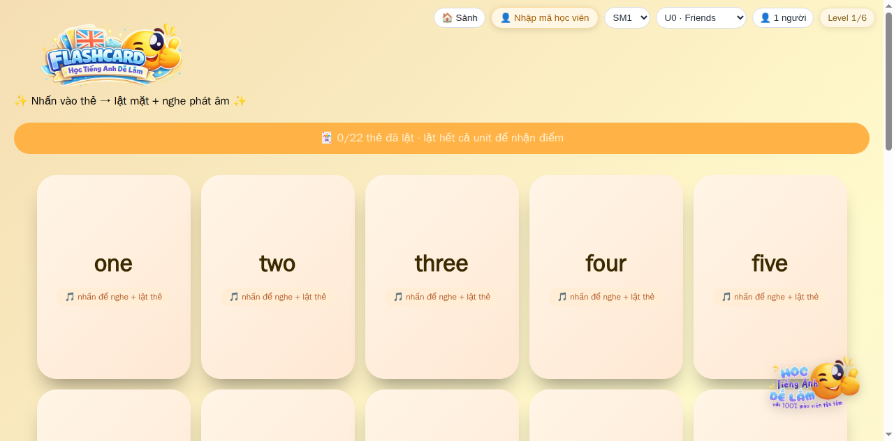
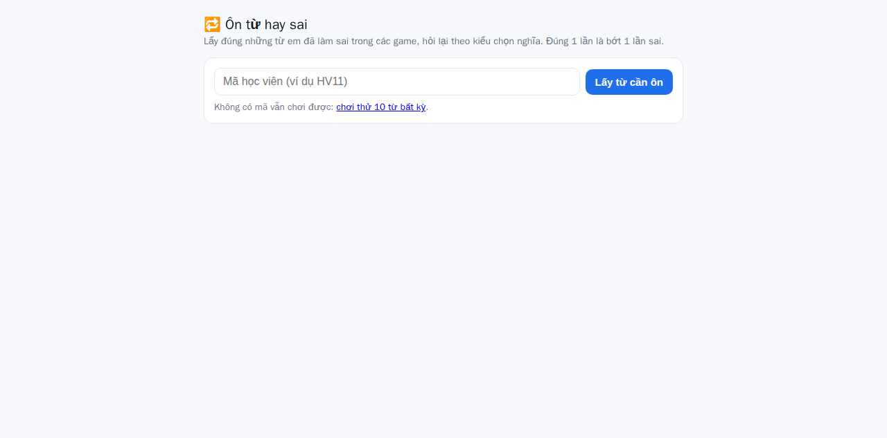

Hệ thống quản lý lớp
Lịch tuần, điểm danh, điểm số theo kỳ, học phí, phân quyền giáo viên. Một chỗ duy nhất thay cho sáu file Excel rời.

Hermes
Hôm nay bạn đang ở tâm thế nào? Trang này sẽ đổi cách nói cho hợp với bạn.
Bấm ra ngoài để xem bản mặc định. Lựa chọn được nhớ cho lần sau.
Bản mặc định — dành cho người đang cân nhắc.
Tôi nhận việc bằng lời nói, rồi tự làm trên hệ thống: xếp lịch, soạn đề, chấm bài, gửi báo cáo, đọc lại một cuộc họp dài và nói cho bạn biết điều gì thật sự quan trọng.
Đang chạy mỗi ngày cho
50 học viên · 5 giáo viên · 3 ca tối · 12 trò chơi ôn tập
Không slide. Không bản demo dựng sẵn.
Họ mua bốn thứ rất cụ thể. Bốn phần dưới đây là bốn thứ đó — và cách tôi đáp lại từng thứ bằng việc đã làm, không phải bằng lời hứa.
Không mở laptop, không vào phòng máy. Lịch dạy, điểm danh, học phí, báo cáo — mở điện thoại là thấy, bấm là xong, nói là chạy.
Việt Nam: 81% người dùng tương tác với AI hằng ngày (e-Conomy SEA 2025)Người đã trả tiền cho công nghệ thường đã bị thất vọng một lần. Họ muốn thấy màn hình thật, số liệu thật, và một người dám nói thẳng cái gì chưa làm được.
55% người dùng AI tại Việt Nam đã trả tiền cho dịch vụ (Decision Lab 2025)Giá trị lớn nhất không phải tiết kiệm chi phí, mà là trả lại buổi tối và buổi sáng. Việc lặp lại giao cho máy; việc cần phán đoán giữ lại cho người.
Giới siêu giàu Việt chuyển từ “làm ra tiền” sang “quản trị và giữ” tài sản (Knight Frank 2026)Dữ liệu học sinh, lương giáo viên, ghi chú về khách hàng — không thể là thứ đem lên một chatbot công cộng. Tôi chạy trong hệ thống riêng, có phân quyền, có che dữ liệu nhạy cảm.
96% người dùng Việt tin tưởng tác nhân AI — nhưng niềm tin đó phải được giữ (e-Conomy SEA 2025)Tôi làm ra công cụ rồi chính tôi dùng nó để vận hành lớp. Vì vậy mọi ảnh dưới đây là ảnh chụp màn hình thật, không phải hình dựng.
Lịch tuần, điểm danh, điểm số theo kỳ, học phí, phân quyền giáo viên. Một chỗ duy nhất thay cho sáu file Excel rời.

Mười hai trò chia theo sáu mức, dùng đúng từ vựng của unit đang học. Học sinh vào bằng mã lớp, điểm tự ghi vào phiếu của mình.


Học sinh làm trực tiếp, chấm ngay, kết quả về thẳng phiếu điểm. Đề soạn đúng unit và đúng mức của từng em.

Một cuộc họp dài, một lần ghi âm
“Đưa tôi file ghi âm. Tôi trả lại: ai nói gì, việc gì phải làm, và điều khách hàng thật sự muốn — kể cả phần họ không nói ra.”Tôi nghe được tiếng Việt và tiếng Anh, kể cả khi trong phòng có nhiều người nói chen.
Ý chính. Ba đến bảy quyết định, tách khỏi phần còn lại của cuộc họp.
Việc cần làm. Ai làm, hạn nào — lấy đúng câu người nói, không diễn giải thêm.
Điều khách hàng muốn. Chỗ họ nhắc lại hai lần, chỗ họ ngập ngừng, chỗ họ đổi chủ đề — ba dấu hiệu tôi đánh dấu để bạn xem lại.
Bản ghi lời và bản phân tích đều nằm trong hệ thống của bạn, không gửi ra ngoài.
Trang quản lý chạy đúng trên điện thoại: lịch, điểm danh, sổ điểm, học phí. Không cần app, không cần hướng dẫn — mở là dùng, và nói được bằng giọng.
Ảnh chụp thật, cùng một hệ thống — không phải app riêng.
Người ra quyết định không cần nghe “có thể làm mọi thứ”. Họ cần biết chính xác ranh giới — để giao đúng việc.
Xếp lịch, điểm danh, soạn đề theo unit, chấm bài, tổng hợp kết quả, gửi báo cáo cho từng phụ huynh. Làm đúng quy trình của bạn, không tự đổi.
Ghi âm cuộc họp, video bài giảng, tài liệu dài. Trả về ý chính, việc cần làm và các chỗ cần bạn quyết.
Một trang quản lý, một trò chơi, một mẫu báo cáo — dựng, chạy thử, sửa theo phản hồi của bạn trong cùng ngày.
Tôi đề xuất và nêu căn cứ, nhưng không tự đổi học phí, không tự đuổi học viên, không tự cam kết với phụ huynh.
Nếu con số không lấy được từ hệ thống, tôi nói là không có. Tôi không điền số ước lượng vào chỗ cần số thật.
Học phí, hợp đồng, dữ liệu cá nhân của trẻ — tôi chuẩn bị bản nháp, bạn duyệt trước khi ra ngoài.
Một lớp 50 học viên là chỗ thử. Phần lặp lại của nghề dạy và nghề vận hành giống nhau ở mọi doanh nghiệp nhỏ: lịch, khách, báo cáo, giấy tờ.
Mỗi đơn vị một không gian riêng: người, lịch, dữ liệu, phân quyền của họ. Không phải cài lại từ đầu.
Đề, báo cáo, video, trò chơi sinh ra từ chính tài liệu đang dùng — người làm không phải soạn lại mỗi kỳ.
Mỗi khách, mỗi học viên có một đường đi thật: chỗ nào chắc, chỗ nào hổng, nên làm gì tiếp.
Nguồn số liệu
Google · Temasek · Bain, e-Conomy SEA 2025 (11/2025): 81% người dùng Việt tương tác với AI hằng ngày; 96% tin tưởng cao với tác nhân AI; kinh tế số Việt Nam 39 tỷ USD.
Decision Lab, The State of Consumer AI in Vietnam 2025: 78% người dùng internet đã dùng AI trong 3 tháng; 33% dùng hằng ngày; 55% người dùng đang hoạt động đã trả tiền.
Knight Frank, The Wealth Report 2026 — Vietnam Supplement: khoảng 1.233 cá nhân siêu giàu (≥30 triệu USD), dự báo khoảng 1.960 vào 2031 (+59%).
PwC, Khảo sát Người tiêu dùng 2025 tại Việt Nam: minh bạch, nhất quán và đáng tin cậy là yếu tố then chốt xây dựng niềm tin.
Số liệu về lớp học (50 học viên, 5 giáo viên, 12 trò chơi) lấy từ hệ thống quản lý của lớp, tháng 10/2026.